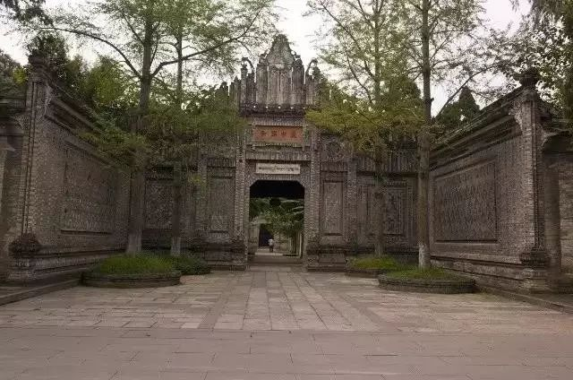
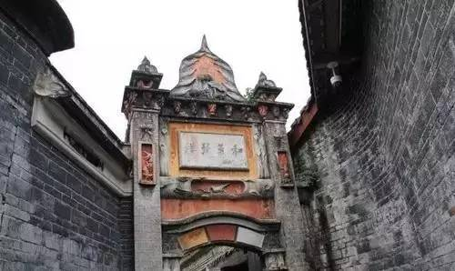
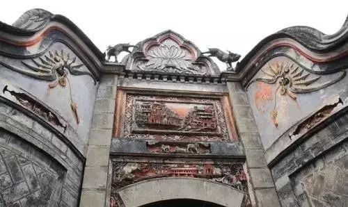
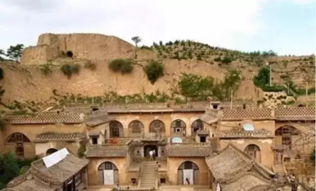
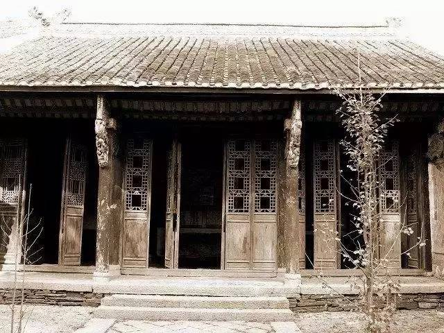

沉淀在历史尘埃中的古建筑（三）
破落的地主庄园气派仍在——李家圩；川西富豪的排场——刘氏庄园
刘氏庄园



刘氏庄园位于四川省成都市大邑县安仁镇，此庄园建筑群由刘文彩始建于清末，至民国末年修建完成，是中国近现代社会的重要史迹和代表性建筑之一。。
刘氏庄园是全国保存完好的地主庄园，其布局错综复杂，曲折幽深，新公馆现名川西民俗博物馆，其配置对称，主次分明。庄园建筑为高墙深院封闭式院落，山墙压顶，重门深巷，迂回曲折，宛若迷宫，充分体现了近代川西富豪之家的奢侈和排场。
李家圩


李家圩地主庄园坐落在安徽霍邱县城西山脚下，是全国四大地主庄园之一。至解放前夕，其在全国仅次于四川刘文彩的刘氏庄园。皖豫交界之地当年是红色革命浪潮澎湃的地方，李家圩庄园经过炮弹的洗礼，极为遗憾的是此庄园没有像山西乔家大院那样得以完整地保存。但李家圩地主庄园深宅大院的格局仍存，冰冷的石狮子彷佛可以娓娓道来那段辉煌的往事。